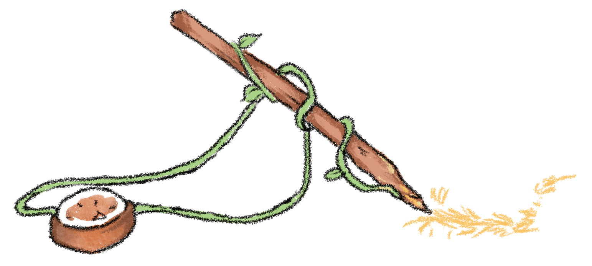

Write in a way that comes easily and naturally to you, using words and phrases that come readily to hand. But do not assume that because you have acted naturally your product is without flaw.

The use of language begins with imitation. The infant imitates the sounds made by its parents; the child imitates first the spoken language, then the stuff of books. The imitative life continues long after the writer is secure in the language, for it is almost impossible to avoid imitating what one admires. Never imitate consciously, but do not worry about being an imitator; take pains instead to admire what is good. Then when you write in a way that comes naturally, you will echo the halloos that bear repeating.